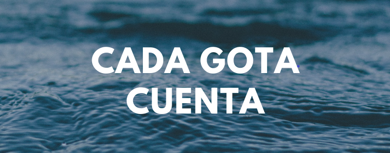
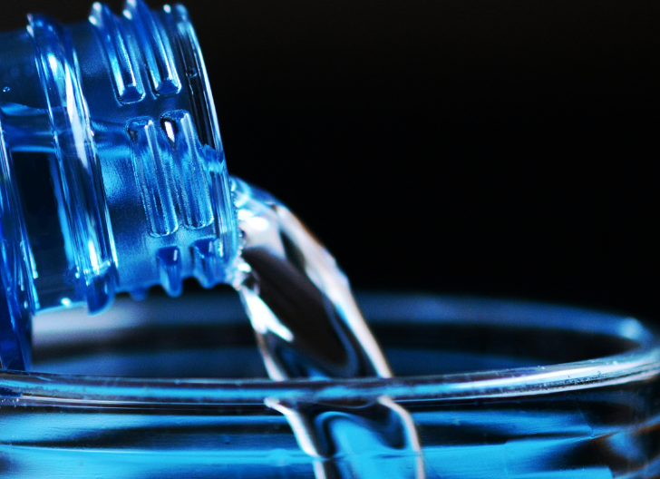

“El agua es la fuerza motriz de toda la naturaleza”.
-Leonardo Da Vinci
¿Quiénes somos?
Somos alumnos de la Facultad de Ingeniería de la UASLP, quienes tenemos conocimientos en áreas tales como la mecánica, computación y geología.
Este proyecto nació en la clase de Gestión y Desarrollo Social cuando formamos un equipo y pudimos observar la manera de aportar un granito de arena tanto a nuestra sociedad como a nuestro planeta haciendo uso de nuestros conocimientos para formar parte de una solución a un problema de nivel mundial, empezando por la región de la Huasteca:
El desabasto del agua potable

Con nuestro blog esperamos llegar a las personas que quieran tener la información, sin importar el lugar en el que estén acerca de como se puede obtener agua potable a partir un filtro casero que, en base a nuestra investigación y con nuestro videotutorial las personas puedan crearlo con la mayoría de los materiales que se encuentran dentro de su mismo hogar, ayudando a mejorar su calidad de vida y su bienestar físico.
